02. Scheduling
📑 Table of Contents
- 1. Kubernetes Scheduling Overview
- 2. Manual Scheduling
- 2.1 Setting
nodeNameat Creation - 2.2 Scheduling Existing Unassigned Pods (Binding API)
- 3. Labels, Selectors, and Annotations
- 3.1 Labels and Selectors Concepts
- 3.2 Attaching Labels to Pods
- 3.3 Object Interconnection via Selectors (ReplicaSets & Services)
- 3.4 Annotations vs. Labels
- 3.5 Practical Filtering Commands
- 4. Taints and Tolerations
- 4.1 Core Concepts & Analogy
- 4.2 Taint Effects:
NoSchedule,PreferNoSchedule,NoExecute - 4.3 Configuring Taints on Nodes
- 4.4 Configuring Tolerations on Pods
- 4.5
NoExecuteDeep-Dive & Pod Eviction - 4.6 Control Plane (Master) Node Taints
- 4.7 Essential Commands for Taints
- 5. Node Selectors
- 5.1 Purpose & Limitations
- 5.2 Labeling Nodes
- 5.3 Assigning Pods with
nodeSelector - 6. Node Affinity
- 6.1 Why Node Affinity?
- 6.2 Node Affinity Types & Pod Lifecycle
- 6.3 Operators (
In,NotIn,Exists,DoesNotExist,Gt,Lt) - 6.4 Pod Manifest Examples
- 7. Taints & Tolerations vs. Node Affinity
- 7.1 Key Differences
- 7.2 Combining Both for Full Node Isolation
- 8. Resource Requests, Limits, and Editing Pods
- 8.1 Scheduling Evaluation & Pending State
- 8.2 Defining Resource Requests & Limits
- 8.3 Understanding Resource Units (CPU & Memory)
- 8.4 Exceeding Limits: CPU Throttling vs. Memory OOMKilled
- 8.5 Default Resource Allocation via LimitRange
- 8.6 Editing Running Pods and Deployments
- 9. DaemonSets
- 9.1 Purpose and Key Use Cases
- 9.2 DaemonSet Manifest & Selectors
- 9.3 How DaemonSets Schedule Pods
- 9.4 Practical Commands
- 10. Static Pods
- 10.1 Concept & Kubelet Independence
- 10.2 Configuring Static Pod Manifest Path
- 10.3 Mirror Pods in kube-apiserver
- 10.4 Deploying Control Plane Components with Static Pods
- 10.5 Static Pods vs. DaemonSets
- 10.6 Diagnostic and Inspection Commands
- 11. Multiple Schedulers
- 11.1 Custom Schedulers Overview
- 11.2 Deploying an Additional Scheduler
- 11.3 High Availability & Leader Election
- 11.4 Assigning Pods to a Custom Scheduler (
schedulerName) - 11.5 Verifying Scheduling Events and Logs
- 11.6 Modern Scheduler Configuration Profiles
- 12. Topology Spread Constraints
- 12.1 Failure Domains & Even Distribution
- 12.2 Core Parameters
- 12.3 Manifest Example
- 13. PriorityClass & Pod Preemption
- 13.1 Preemption Mechanism
- 13.2 Defining a PriorityClass
- 13.3 Assigning PriorityClass to Pods
- 13.4 Non-Preempting Priorities & System Classes
- 14. Pod Disruption Budgets (PDB)
- 14.1 Voluntary vs. Involuntary Disruptions
- 14.2 PDB Manifest Specifications
- 14.3 Inspection and Diagnostic Commands
- 15. LimitRange (Namespace Constraints)
- 15.1 Namespace-Level Resource Governance
- 15.2 Comprehensive LimitRange Manifest
- 15.3 LimitRange vs. ResourceQuota
1. Kubernetes Scheduling Overview
The Kubernetes Scheduler (kube-scheduler) is responsible for assigning unscheduled Pods to suitable worker nodes in the cluster.
- Filtering (Predicates): Filters out nodes that do not meet Pod requirements (resource capacity, taints/tolerations, node selectors).
- Scoring (Priorities): Ranks remaining eligible nodes and selects the node with the highest score.
- Binding: Creates a Binding object that updates spec.nodeName on the Pod.
If no scheduler is running or no nodes meet the requirements, Pods remain stuck in the Pending state.
2. Manual Scheduling
2.1 Setting nodeName at Creation
When no scheduler is active, or to bypass the scheduler entirely, set the nodeName field under spec in the Pod manifest. The Pod is directly assigned to the designated node upon creation.
apiVersion: v1
kind: Pod
metadata:
name: nginx
labels:
name: nginx
spec:
nodeName: node02
containers:
- name: nginx
image: nginx
ports:
- containerPort: 8080
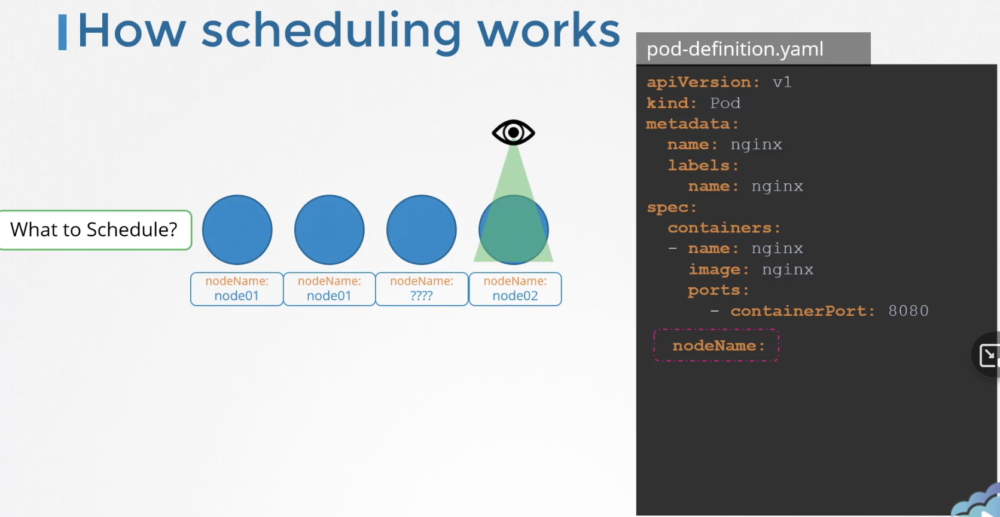
[!NOTE]
nodeNamecan only be assigned at Pod creation time. Kubernetes does not allow modifyingspec.nodeNameon an already-created Pod viakubectl editor standard YAML updates.
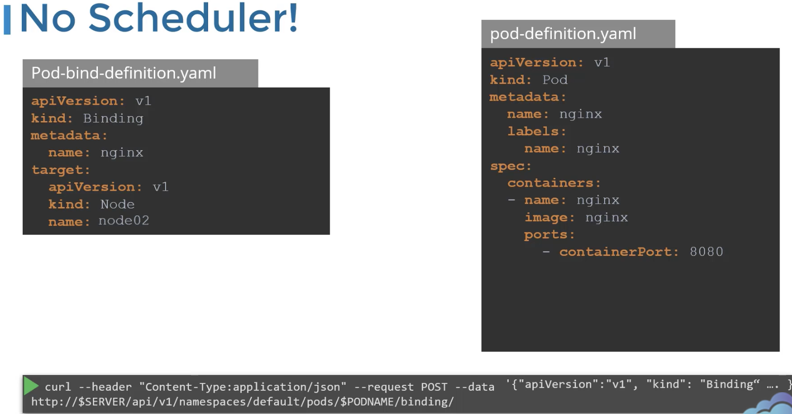
2.2 Scheduling Existing Unassigned Pods (Binding API)
If a Pod is already created without a node assignment (in Pending state), assign it manually by creating a Binding object and submitting an HTTP POST request to the Pod's binding sub-resource:
Binding Object Definition (pod-bind-definition.yaml)
apiVersion: v1
kind: Binding
metadata:
name: nginx
target:
apiVersion: v1
kind: Node
name: node02
Executing the Binding API Call
Convert the binding object into JSON and send a POST request to the target Pod's binding endpoint:
curl --header "Content-Type: application/json" \
--request POST \
--data '{"apiVersion":"v1","kind":"Binding","metadata":{"name":"nginx"},"target":{"apiVersion":"v1","kind":"Node","name":"node02"}}' \
http://127.0.0.1:8001/api/v1/namespaces/default/pods/nginx/binding
3. Labels, Selectors, and Annotations
3.1 Labels and Selectors Concepts
- Labels: Key-value pairs attached to Kubernetes objects (Pods, Services, Nodes) for identification, categorization, and filtering.
- Selectors: Query expressions used by operators and controllers to filter and group objects matching specific label criteria.
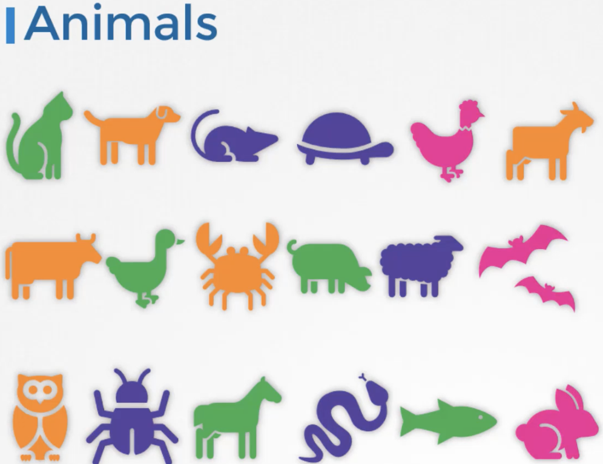
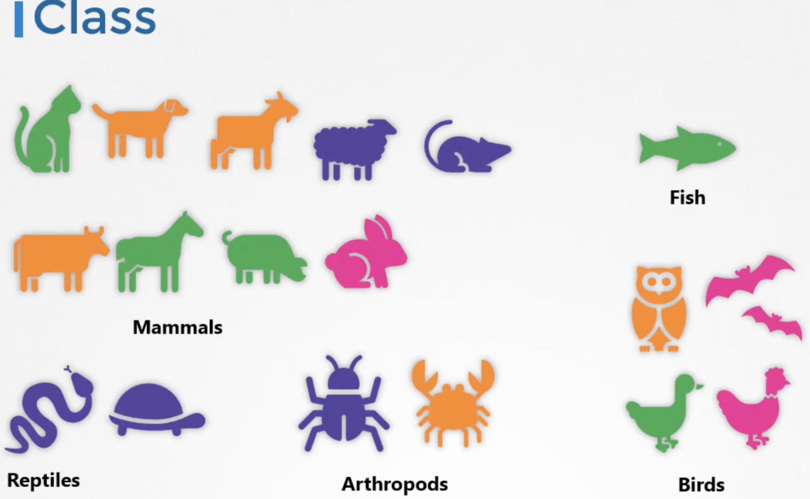
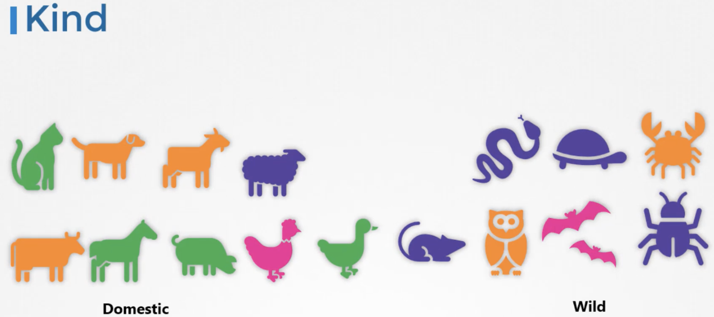
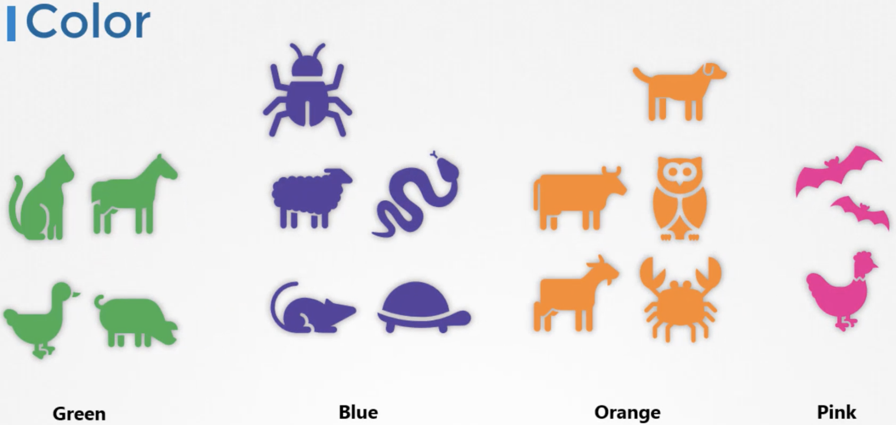
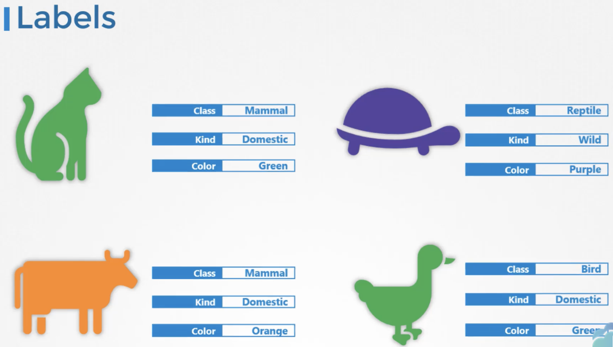
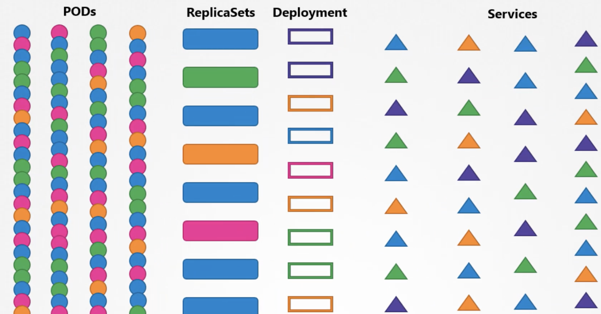
In Kubernetes production environments, labels categorize resources by application name, environment, tier, or business unit:
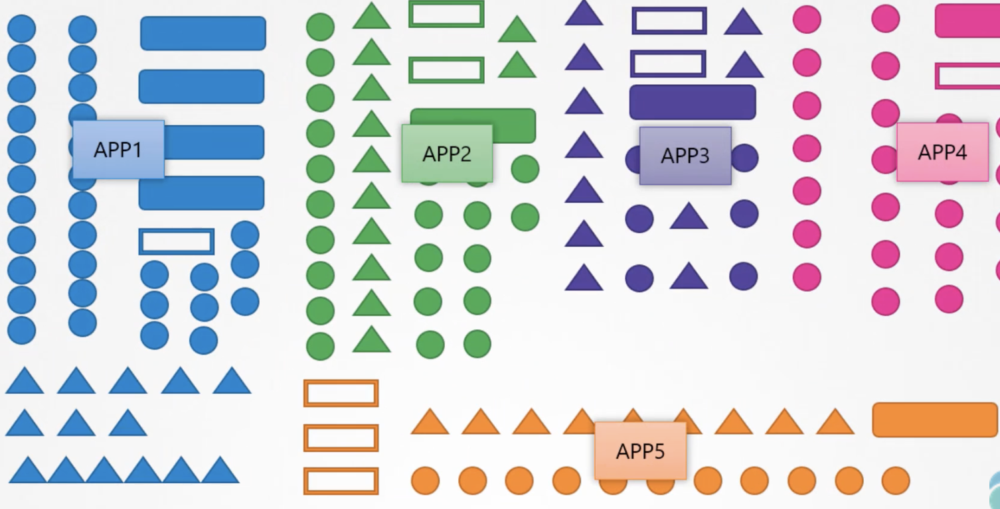
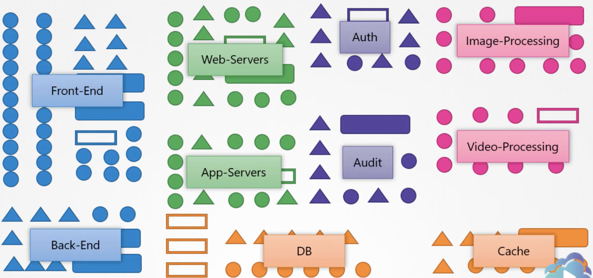
3.2 Attaching Labels to Pods
Labels are defined under metadata.labels:
apiVersion: v1
kind: Pod
metadata:
name: simple-webapp
labels:
app: App1
function: Front-end
spec:
containers:
- name: simple-webapp
image: simple-webapp
ports:
- containerPort: 8080
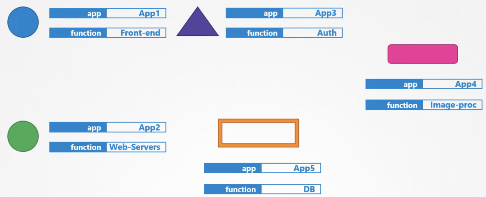
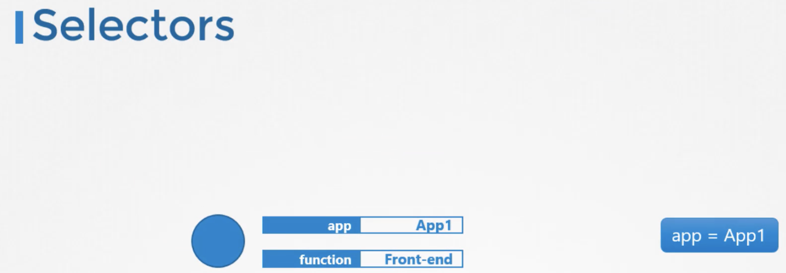
Query labeled pods using the --selector (or -l) flag:
kubectl get pods --selector app=App1
3.3 Object Interconnection via Selectors (ReplicaSets & Services)
Controllers use label selectors internally to track and route traffic to target Pods:
ReplicaSet Pod Discovery
metadata.labels: Labels applied to the ReplicaSet object itself.spec.selector.matchLabels: Must matchspec.template.metadata.labelsof the Pod template.
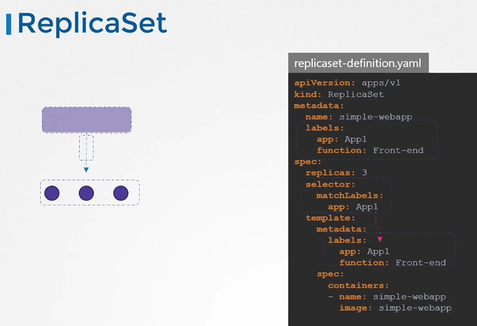
Service Routing to Backend Pods
A Service uses spec.selector to dynamically select endpoints:
apiVersion: v1
kind: Service
metadata:
name: my-service
spec:
selector:
app: App1
ports:
- protocol: TCP
port: 80
targetPort: 9376
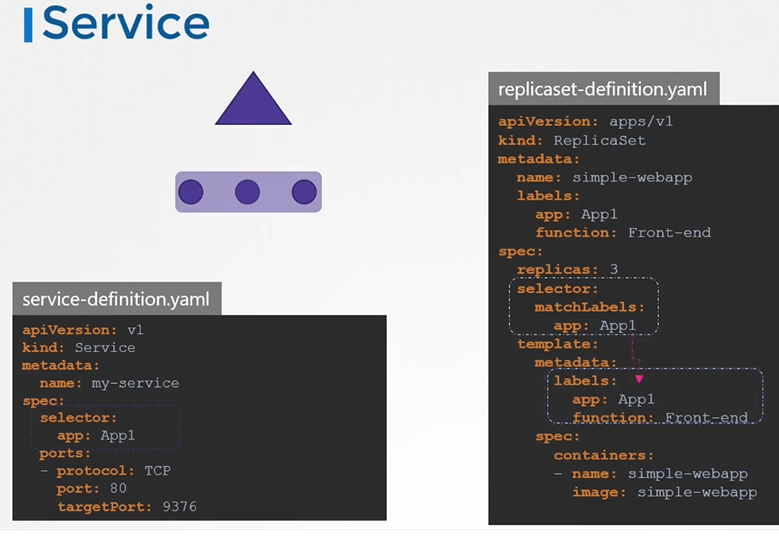
3.4 Annotations vs. Labels
| Characteristic | Labels | Annotations |
|---|---|---|
| Purpose | Identifying, grouping, and selecting objects | Recording non-identifying metadata |
| Used by Selectors? | Yes (matchLabels, --selector) |
No |
| Typical Data | tier: frontend, env: prod, app: web |
Build timestamps, Git commit SHA, contact emails, tool configs |
ReplicaSet with Annotations
apiVersion: apps/v1
kind: ReplicaSet
metadata:
name: simple-webapp
labels:
app: App1
function: Front-end
annotations:
buildversion: "1.34"
maintainer: "devops-team@example.com"
spec:
replicas: 3
selector:
matchLabels:
app: App1
template:
metadata:
labels:
app: App1
function: Front-end
spec:
containers:
- name: simple-webapp
image: simple-webapp
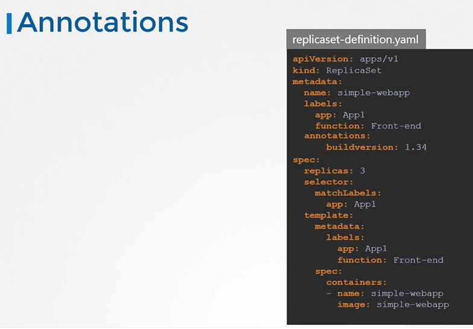
3.5 Practical Filtering Commands
# Filter Pods by single label
kubectl get pods --selector env=dev
kubectl get pods --selector bu=finance
# Filter all resources in production environment
kubectl get all --selector env=prod
# Multiple label conditions (logical AND via comma-separated list)
kubectl get all --selector env=prod,bu=finance,tier=frontend
4. Taints and Tolerations
4.1 Core Concepts & Analogy
- Taints are applied to Nodes to repel a set of Pods.
- Tolerations are applied to Pods to allow (but not force) them to schedule on nodes with matching taints.
- Analogy: A node is sprayed with insect repellent (taint). Only insects immune to the repellent (pods with tolerations) can land on it.
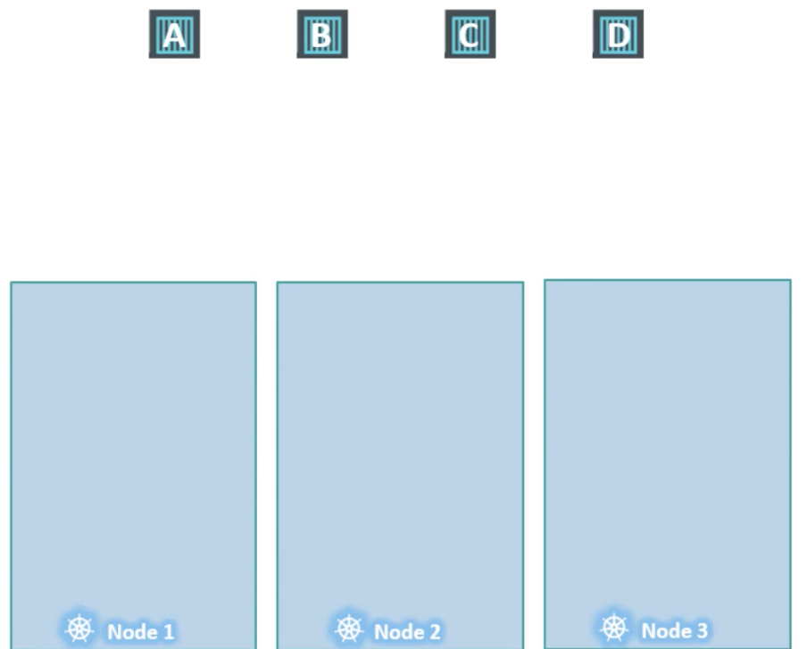
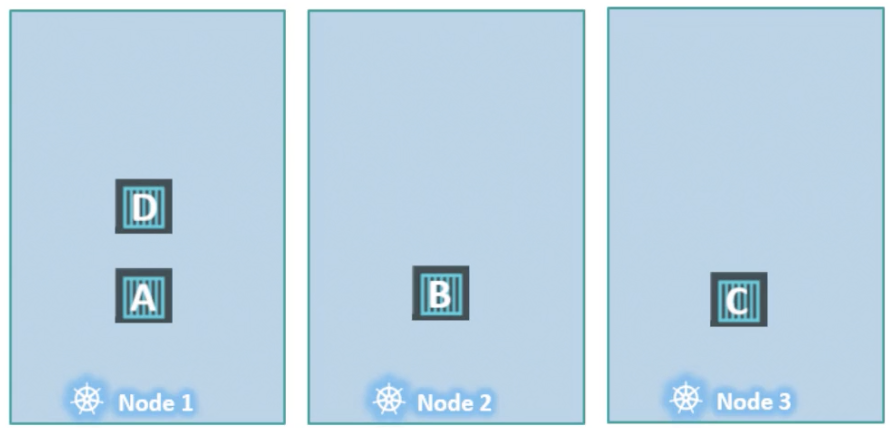
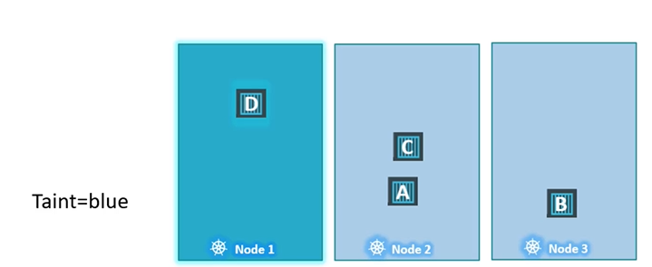
[!IMPORTANT] Taints and Tolerations do NOT guarantee Pod placement! A toleration merely permits a Pod to schedule on a tainted node. If untainted nodes are also available, the scheduler may place the tolerating Pod on an untainted node. Full dedication requires pairing with Node Affinity.
4.2 Taint Effects: NoSchedule, PreferNoSchedule, NoExecute
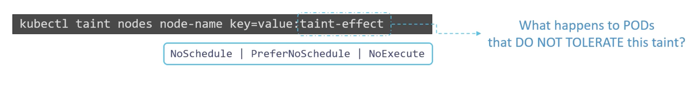
NoSchedule: New pods without matching tolerations will not be scheduled on this node. Existing running pods remain untouched.PreferNoSchedule: Soft constraint. The scheduler tries to avoid scheduling intolerant pods on this node, but will place them here if no alternatives exist.NoExecute: Hard constraint affecting both new and running pods. New intolerant pods are rejected, and existing running intolerant pods are immediately evicted (terminated).
4.3 Configuring Taints on Nodes
# Syntax
kubectl taint nodes <node-name> <key>=<value>:<taint-effect>
# Examples
kubectl taint nodes node1 app=blue:NoSchedule
kubectl taint nodes node1 app=blue:PreferNoSchedule
kubectl taint nodes node1 app=blue:NoExecute
4.4 Configuring Tolerations on Pods
Tolerations are configured under spec.tolerations inside the Pod manifest:
apiVersion: v1
kind: Pod
metadata:
name: myapp-pod
spec:
containers:
- name: nginx-container
image: nginx
tolerations:
- key: "app"
operator: "Equal"
value: "blue"
effect: "NoSchedule"
[!TIP] If
operator: "Exists"is specified, thevaluefield must be omitted. AnExistsoperator matches any value for the specified key.
4.5 NoExecute Deep-Dive & Pod Eviction
When a node running multiple Pods receives a NoExecute taint:
- Pods with matching tolerations remain running.
- Pods without matching tolerations are evicted immediately.
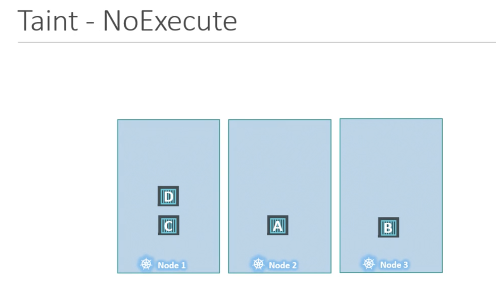
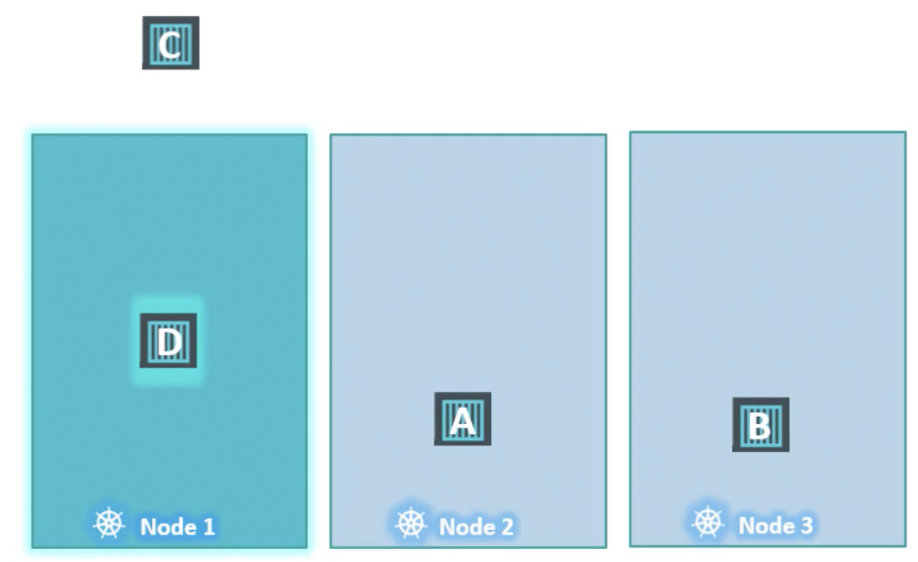
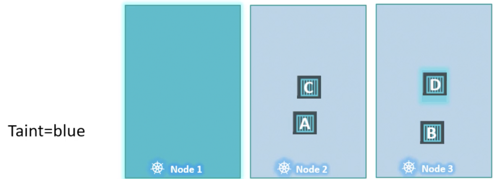
Optional tolerationSeconds
Pods can specify tolerationSeconds under a NoExecute toleration to delay eviction upon node disruption:
tolerations:
- key: "node.kubernetes.io/unreachable"
operator: "Exists"
effect: "NoExecute"
tolerationSeconds: 300
4.6 Control Plane (Master) Node Taints
By default, Kubernetes prevents user workloads from running on control plane nodes by applying a taint during cluster initialization:
- Older versions: node-role.kubernetes.io/master:NoSchedule
- Newer versions: node-role.kubernetes.io/control-plane:NoSchedule
Inspecting Control Plane Taints
kubectl describe node controlplane | grep -i taints
4.7 Essential Commands for Taints
# Check taints on worker nodes
kubectl describe node node01 | grep -i taints
# Apply a taint to node01
kubectl taint nodes node01 spray=mortein:NoSchedule
# Remove a taint (append a minus sign '-' to the taint)
kubectl taint nodes controlplane node-role.kubernetes.io/master:NoSchedule-
kubectl taint nodes controlplane node-role.kubernetes.io/control-plane:NoSchedule-
kubectl taint nodes node01 spray=mortein:NoSchedule-
Example Workload Lacking Toleration
apiVersion: v1
kind: Pod
metadata:
name: mosquito
labels:
app: my-app
tier: front-end
spec:
containers:
- name: nginx
image: nginx
5. Node Selectors
5.1 Purpose & Limitations
In clusters with heterogeneous hardware (e.g., general-purpose vs. high-memory compute nodes), workloads requiring specific resources must be targeted to designated nodes. Without restrictions, the default scheduler may place heavy compute jobs on small nodes.
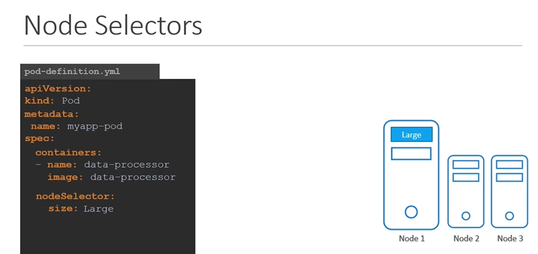
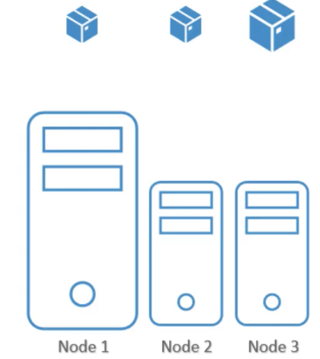
5.2 Labeling Nodes
Before using nodeSelector, assign descriptive labels to target worker nodes:
# Syntax
kubectl label nodes <node-name> <label-key>=<label-value>
# Example: Label node01 as Large
kubectl label nodes node01 size=Large
# Verify applied labels
kubectl get nodes --show-labels
5.3 Assigning Pods with nodeSelector
Reference the exact node label key-value pair under spec.nodeSelector:
apiVersion: v1
kind: Pod
metadata:
name: myapp-pod
spec:
containers:
- name: data-processor
image: data-processor
nodeSelector:
size: Large
kubectl create -f pod-definition.yaml
[!WARNING] Limitations of
nodeSelector:nodeSelectoronly supports exact equality matching (size: Large). It cannot perform advanced logic such as OR (Large OR Medium), NOT (NOT Small), or existence checks. For advanced rules, use Node Affinity.
6. Node Affinity
6.1 Why Node Affinity?
Node Affinity extends nodeSelector with expressive placement logic, providing operators such as In, NotIn, Exists, DoesNotExist, Gt, and Lt.
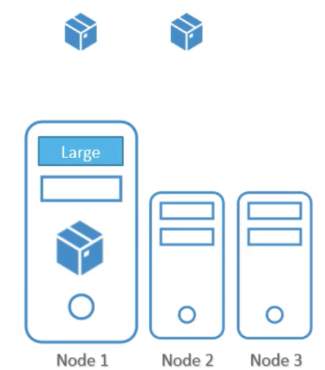
6.2 Node Affinity Types & Pod Lifecycle
Node affinity defines scheduler behavior across two distinct lifecycle phases: 1. DuringScheduling: When the Pod is first created and unassigned. 2. DuringExecution: When the Pod is already running on a node.
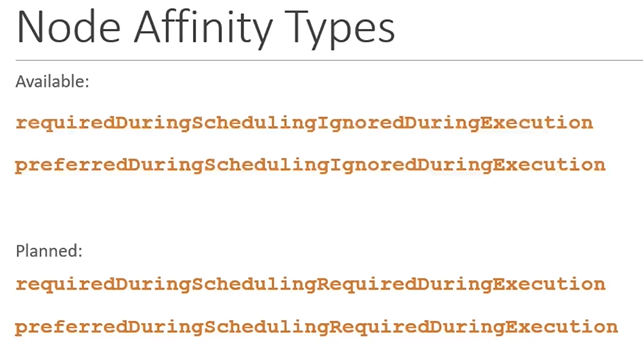
| Affinity Type | DuringScheduling | DuringExecution | Description |
|---|---|---|---|
requiredDuringSchedulingIgnoredDuringExecution |
Hard | Ignored | Pod must be scheduled on a matching node; stays Pending if no match exists. If node labels change later, running pod remains running. |
preferredDuringSchedulingIgnoredDuringExecution |
Soft | Ignored | Scheduler attempts to find a matching node; falls back to other available nodes if no match is found. Running pods remain unaffected. |
requiredDuringSchedulingRequiredDuringExecution (Planned) |
Hard | Hard | Pod must be scheduled on matching node. If node labels change later, pod is evicted immediately. |
6.3 Operators (In, NotIn, Exists, DoesNotExist, Gt, Lt)
In: Node label value must match one of the entries invalues.NotIn: Node label value must not match any entry invalues.Exists: Node label key must exist on the node (omitvalues).DoesNotExist: Node label key must not exist on the node (omitvalues).Gt/Lt: Numerical greater-than / less-than comparison against integer label values.
6.4 Pod Manifest Examples
Hard Affinity with In Operator (Large OR Medium)
apiVersion: v1
kind: Pod
metadata:
name: myapp-pod
spec:
containers:
- name: data-processor
image: data-processor
affinity:
nodeAffinity:
requiredDuringSchedulingIgnoredDuringExecution:
nodeSelectorTerms:
- matchExpressions:
- key: size
operator: In
values:
- Large
- Medium
Hard Affinity with NotIn Operator (Exclude Small Nodes)
apiVersion: v1
kind: Pod
metadata:
name: myapp-pod
spec:
containers:
- name: data-processor
image: data-processor
affinity:
nodeAffinity:
requiredDuringSchedulingIgnoredDuringExecution:
nodeSelectorTerms:
- matchExpressions:
- key: size
operator: NotIn
values:
- Small
Hard Affinity with Exists Operator (Verify Label Key Presence)
apiVersion: v1
kind: Pod
metadata:
name: myapp-pod
spec:
containers:
- name: data-processor
image: data-processor
affinity:
nodeAffinity:
requiredDuringSchedulingIgnoredDuringExecution:
nodeSelectorTerms:
- matchExpressions:
- key: size
operator: Exists
Soft Affinity (preferredDuringSchedulingIgnoredDuringExecution)
apiVersion: v1
kind: Pod
metadata:
name: myapp-pod
spec:
containers:
- name: data-processor
image: data-processor
affinity:
nodeAffinity:
preferredDuringSchedulingIgnoredDuringExecution:
- weight: 1
preference:
matchExpressions:
- key: size
operator: In
values:
- Large
Practical Deployment with Node Affinity
# Label node01 with color=Blue
kubectl label nodes node01 color=Blue
apiVersion: apps/v1
kind: Deployment
metadata:
name: blue
labels:
app: nginx
spec:
replicas: 3
selector:
matchLabels:
app: nginx
template:
metadata:
labels:
app: nginx
spec:
affinity:
nodeAffinity:
requiredDuringSchedulingIgnoredDuringExecution:
nodeSelectorTerms:
- matchExpressions:
- key: color
operator: In
values:
- Blue
containers:
- name: nginx
image: nginx
7. Taints & Tolerations vs. Node Affinity
7.1 Key Differences
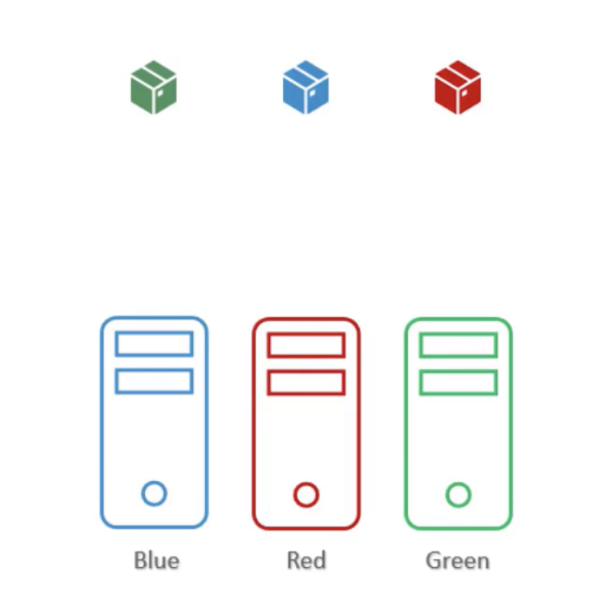
- Taints & Tolerations: Set on nodes to keep unwanted pods out. They do not guarantee that tolerating pods won't land on other untainted nodes.
- Node Affinity: Set on pods to attract them to specific nodes. It does not prevent other untargeted pods from landing on those same nodes.
7.2 Combining Both for Full Node Isolation
To achieve 100% dedicated node isolation (e.g., dedicating NodeBlue exclusively to PodBlue):
1. Apply a Taint to the Node: Repels all other workloads that do not tolerate color=blue.
2. Apply a Toleration to the Pod: Enables PodBlue to schedule on NodeBlue.
3. Apply a Node Label & Node Affinity to the Pod: Directs PodBlue specifically to NodeBlue, preventing it from scheduling on untainted nodes.
flowchart LR
A["Taint on Node<br/>(Repels Other Pods)"] --> C["Dedicated Node Isolation"]
B["Node Affinity on Pod<br/>(Pulls Pod to Target Node)"] --> C
8. Resource Requests, Limits, and Editing Pods
8.1 Scheduling Evaluation & Pending State
The scheduler evaluates the sum of container requests against the allocatable capacity of worker nodes:
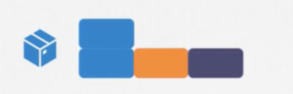
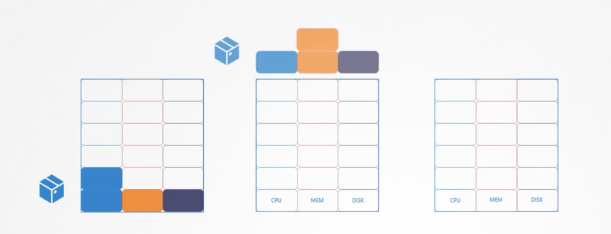
If no single node possesses sufficient CPU or memory capacity to satisfy the requested amount, the Pod is held in a Pending state:
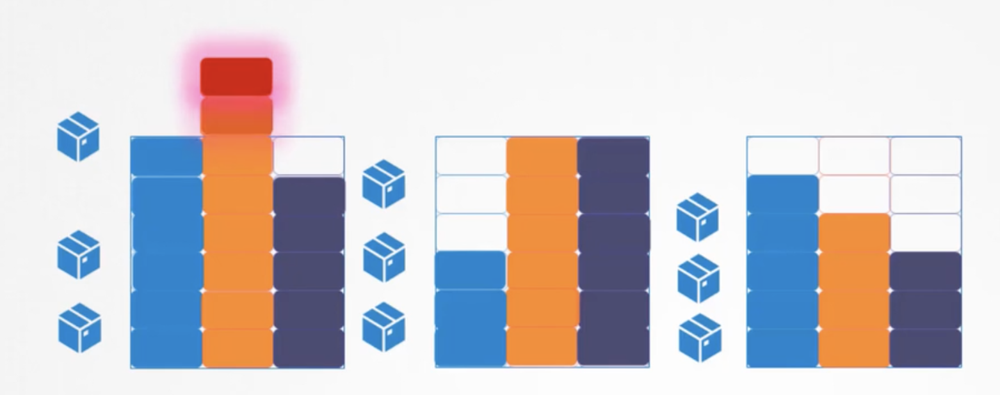
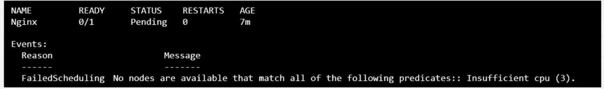
Inspect events to determine the scheduling failure cause:
kubectl describe pod <pod-name>
# Event Reason: FailedScheduling: 0/3 nodes are available: 3 Insufficient cpu.
8.2 Defining Resource Requests & Limits
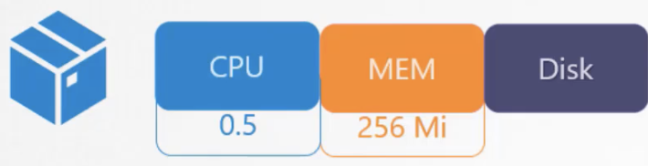
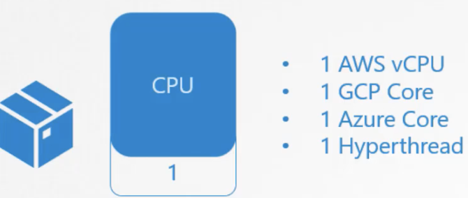
- Requests: Minimum compute resources guaranteed to the container. Used by
kube-schedulerduring node selection. - Limits: Maximum ceiling of compute resources the container can consume. Enforced by the container runtime via cgroups.
apiVersion: v1
kind: Pod
metadata:
name: simple-webapp-color
labels:
name: simple-webapp-color
spec:
containers:
- name: simple-webapp-color
image: simple-webapp-color
ports:
- containerPort: 8080
resources:
requests:
cpu: "1"
memory: "1Gi"
limits:
cpu: "2"
memory: "2Gi"
8.3 Understanding Resource Units (CPU & Memory)
CPU Units
- 1 CPU = 1 vCPU (AWS) = 1 Core (GCP/Azure) = 1 Hyperthread.
- Minimum granularity: 1m (one millicore = 0.001 CPU).
- 500m = 0.5 CPU.
Memory Units
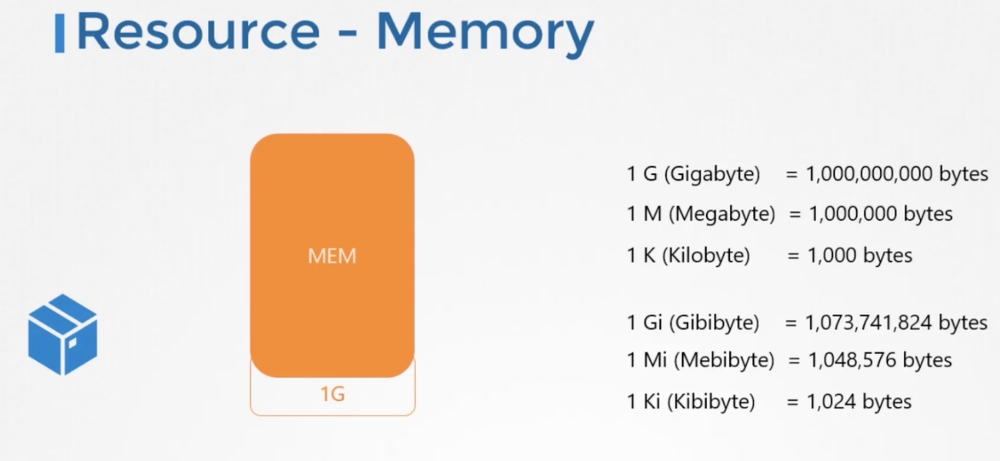
- Binary representation (powers of 1024):Ki, Mi, Gi, Ti (e.g., 256Mi = $256 \times 1024^2$ bytes).
- Decimal representation (powers of 1000): K, M, G, T (e.g., 256M = $256 \times 1000^2$ bytes).
8.4 Exceeding Limits: CPU Throttling vs. Memory OOMKilled
- CPU (Compressible): When a container reaches its CPU limit, the kernel throttles execution cycles. The application slows down, but the Pod is not terminated.
- Memory (Incompressible): When a container exceeds its memory limit, the Linux Out-Of-Memory (OOM) killer terminates the offending process. The Pod fails with status
OOMKilled(Exit Code 137).
8.5 Default Resource Allocation via LimitRange
To enforce baseline requests and limits across Pods that do not explicitly define them, configure a LimitRange in the target namespace:
apiVersion: v1
kind: LimitRange
metadata:
name: mem-limit-range
namespace: default
spec:
limits:
- default:
memory: 512Mi
defaultRequest:
memory: 256Mi
type: Container
---
apiVersion: v1
kind: LimitRange
metadata:
name: cpu-limit-range
namespace: default
spec:
limits:
- default:
cpu: "1"
defaultRequest:
cpu: "500m"
type: Container
8.6 Editing Running Pods and Deployments
Editing a Running Pod
Only the following fields are mutable on an active running Pod:
1. spec.containers[*].image
2. spec.initContainers[*].image
3. spec.activeDeadlineSeconds
4. spec.tolerations
Modifying any other field (e.g., environment variables, resource limits, ports) triggers an API validation error:
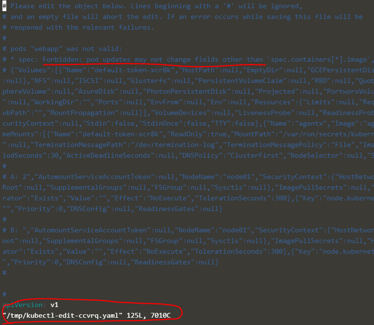
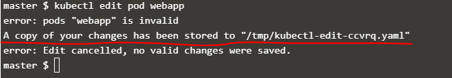
Workarounds for Immutable Pod Fields
-
Using Temporary File from
kubectl edit:bash kubectl edit pod webapp # When saving fails, Kubernetes saves edits to /tmp/kubectl-edit-xxxx.yaml kubectl delete pod webapp kubectl create -f /tmp/kubectl-edit-xxxx.yaml -
Export, Modify, and Recreate:
bash kubectl get pod webapp -o yaml > my-new-pod.yaml vi my-new-pod.yaml kubectl replace --force -f my-new-pod.yaml # Or explicitly: # kubectl delete pod webapp # kubectl create -f my-new-pod.yaml
Editing Deployments
All fields in spec.template can be edited freely. Kubernetes automatically performs a rolling restart of underlying replica pods:
kubectl edit deployment my-deployment
9. DaemonSets
9.1 Purpose and Key Use Cases
A DaemonSet ensures that an exact single copy of a specified Pod runs on all (or selected) worker nodes in the cluster. - When new nodes join the cluster, DaemonSet pods are automatically provisioned on them. - When nodes are removed, DaemonSet pods are automatically garbage collected.
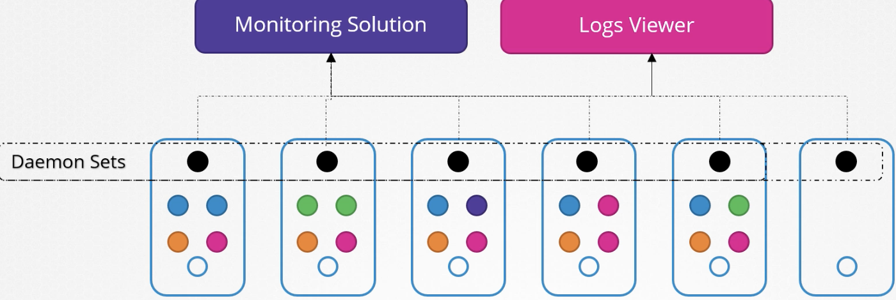
Common Use Cases:
- Cluster Monitoring Agents: Prometheus Node Exporter, Datadog agent, New Relic.
- Log Collectors: Fluentd, Logstash, Vector, Fluentbit.
- Cluster Networking:
kube-proxy, CNI plugins (Weave Net, Flannel, Calico).
9.2 DaemonSet Manifest & Selectors
apiVersion: apps/v1
kind: DaemonSet
metadata:
name: monitoring-daemon
labels:
app: monitoring-agent
spec:
selector:
matchLabels:
app: monitoring-agent
template:
metadata:
labels:
app: monitoring-agent
spec:
containers:
- name: monitoring-agent
image: monitoring-agent
9.3 How DaemonSets Schedule Pods
- Pre-Kubernetes v1.12: The DaemonSet controller directly configured
spec.nodeNameon pod creation, bypassing the scheduler entirely. - Kubernetes v1.12+: DaemonSet pods are scheduled by the default scheduler using automatically injected
NodeAffinityrules and default tolerations.
9.4 Practical Commands
# List all DaemonSets across namespaces
kubectl get daemonsets --all-namespaces
# Inspect DaemonSet details
kubectl describe daemonsets kube-flannel-ds -n kube-system
# Fast generation via Deployment dry-run:
kubectl create deployment elasticsearch --image=k8s.gcr.io/fluentd-elasticsearch:1.20 \
-n kube-system --dry-run=client -o yaml > fluentd.yaml
# Modify fluentd.yaml:
# 1. Change 'kind: Deployment' to 'kind: DaemonSet'
# 2. Remove 'replicas', 'strategy', and 'status' fields
kubectl create -f fluentd.yaml
10. Static Pods
10.1 Concept & Kubelet Independence
Static Pods are managed directly by the kubelet daemon on an individual node without involvement from the control plane (kube-apiserver, kube-scheduler, or controller-manager).
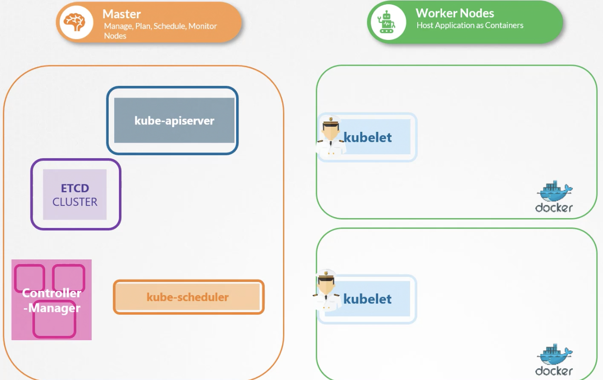
- Kubelet periodically scans a designated host directory for manifest files.
- Kubelet creates, monitors, and restarts the static Pods directly on the host container runtime.
- If a manifest is updated, kubelet restarts the Pod. If removed, kubelet deletes the Pod.
- Limitation: Kubelet can only manage individual Pods statically—it cannot create ReplicaSets, Deployments, or Services.
10.2 Configuring Static Pod Manifest Path
The static pod directory is configured using one of two methods:
Method 1: Kubelet Service Command-Line Flag
Set --pod-manifest-path in /etc/systemd/system/kubelet.service.d/10-kubeadm.conf:
--pod-manifest-path=/etc/kubernetes/manifests
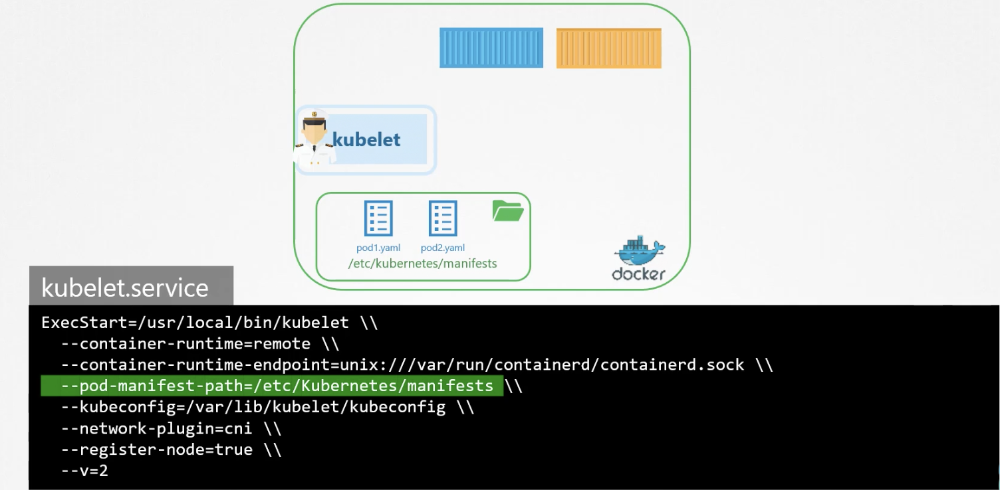
Method 2: Kubelet YAML Configuration File (kubeadm standard)
Set --config=/var/lib/kubelet/config.yaml in the service file, and define staticPodPath in config.yaml:
staticPodPath: /etc/kubernetes/manifests
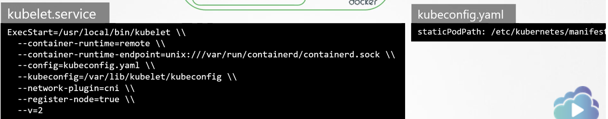
10.3 Mirror Pods in kube-apiserver
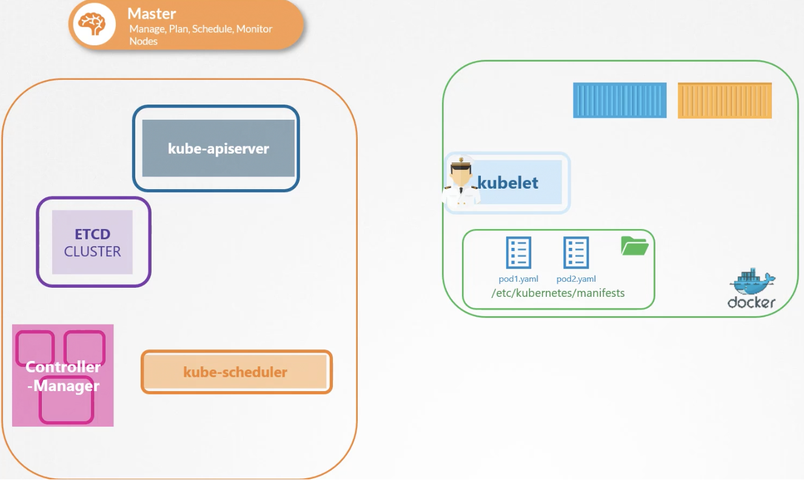
When a node with static pods belongs to a Kubernetes cluster:
- Kubelet registers a read-only Mirror Pod in kube-apiserver.
- Mirror pods appear in kubectl get pods, with the host node name appended to the pod name (e.g., kube-apiserver-controlplane).
- You cannot edit or delete a static pod via kubectl. Modifying or deleting requires direct filesystem access to the node's static manifest folder.
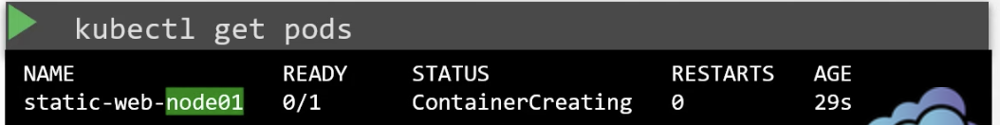
10.4 Deploying Control Plane Components with Static Pods
The kubeadm initialization tool leverages Static Pods to bootstrap the core Kubernetes control plane:
- Manifests placed in /etc/kubernetes/manifests/:
- kube-apiserver.yaml
- kube-controller-manager.yaml
- kube-scheduler.yaml
- etcd.yaml
- Kubelet runs and restarts these core components without requiring an existing operational cluster.
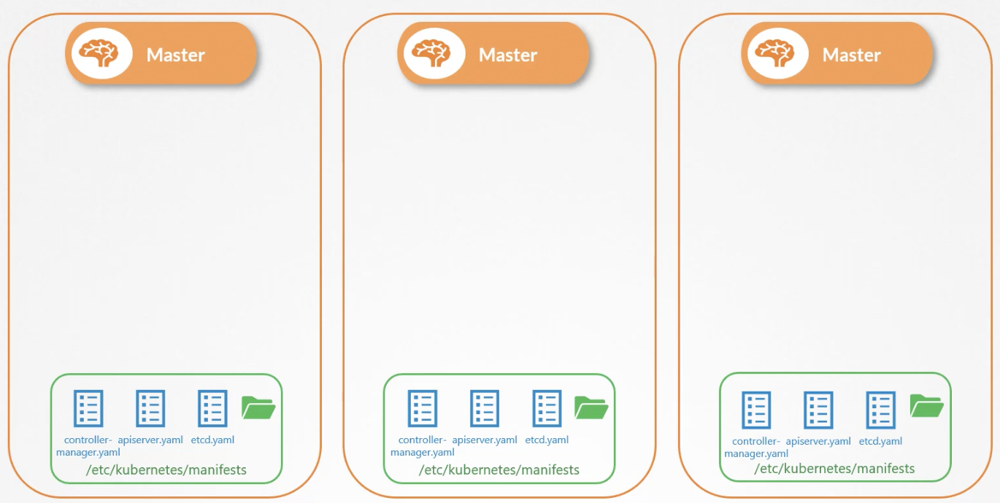
10.5 Static Pods vs. DaemonSets
| Feature | Static Pods | DaemonSets |
|---|---|---|
| Created / Managed By | Kubelet directly | DaemonSet Controller (Control Plane) |
| API Server Requirement | Not required (operates standalone) | Mandatory |
| Creation Method | Placing YAML in manifest directory | Applying YAML through kubectl / API |
| Scope | Single node | Multi-node across cluster |
| Kube-Scheduler Impact | Completely ignored | Scheduled via default scheduler |
| Primary Use Case | Bootstrapping control plane (apiserver, etcd) |
Monitoring, log collection, CNI networking |
10.6 Diagnostic and Inspection Commands
# List all pods including mirror pods
kubectl get pods --all-namespaces
# Identify the static pod manifest path on a node
ps -ef | grep kubelet | grep -i config
# Inspect the resulting config file:
grep -i staticpod /var/lib/kubelet/config.yaml
# View running containers on a standalone node (without kubectl/API server)
crictl ps
# Or if Docker is the runtime:
docker ps
11. Multiple Schedulers
11.1 Custom Schedulers Overview
Kubernetes is extensible: you can run multiple schedulers concurrently alongside the default-scheduler. Applications choose which scheduler places their Pods using the schedulerName property.
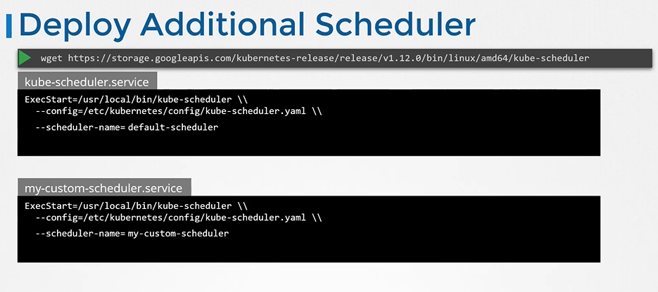
11.2 Deploying an Additional Scheduler
An additional scheduler can run as a binary service or as a Pod inside the kube-system namespace.
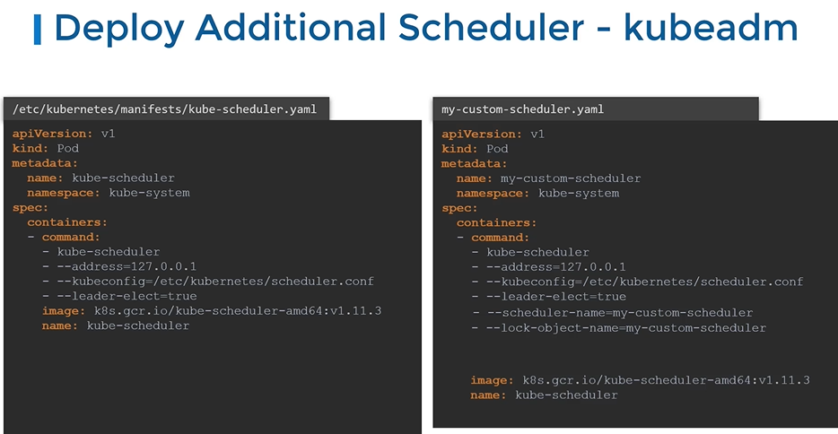
Custom Scheduler Pod Manifest (my-custom-scheduler.yaml)
apiVersion: v1
kind: Pod
metadata:
name: my-custom-scheduler
namespace: kube-system
spec:
containers:
- name: kube-scheduler
image: registry.k8s.io/kube-scheduler:v1.30.0
command:
- kube-scheduler
- --address=0.0.0.0
- --leader-elect=false
- --scheduler-name=my-custom-scheduler
kubectl create -f my-custom-scheduler.yaml
kubectl get pods -n kube-system
11.3 High Availability & Leader Election
When running multiple replicas of a scheduler across master nodes:
- Set --leader-elect=true to elect an active leader while other replicas remain on standby.
- When running a secondary custom scheduler alongside the default scheduler, set --leader-elect=false or configure a distinct --lock-object-name to prevent interfering with the default scheduler's leader election.
11.4 Assigning Pods to a Custom Scheduler (schedulerName)
Designate the custom scheduler in spec.schedulerName:
apiVersion: v1
kind: Pod
metadata:
name: nginx
spec:
schedulerName: my-custom-scheduler
containers:
- name: nginx
image: nginx
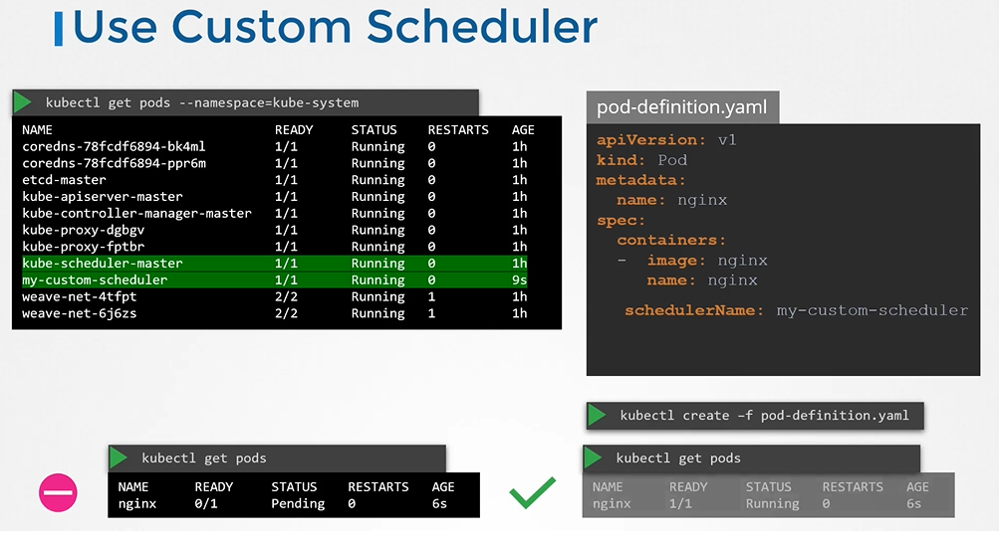
kubectl create -f pod-definition.yaml
kubectl get pods
11.5 Verifying Scheduling Events and Logs
Check Scheduling Events
kubectl get events
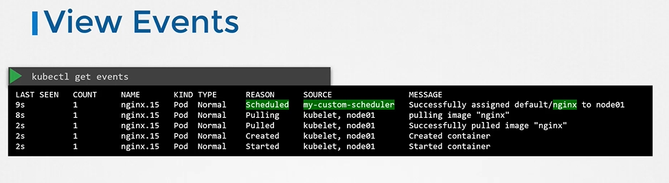
The event output confirms scheduling was handled by my-custom-scheduler:
default Normal Scheduled pod/nginx Successfully assigned default/nginx to node01 by my-custom-scheduler
Inspect Scheduler Logs
kubectl logs my-custom-scheduler -n kube-system
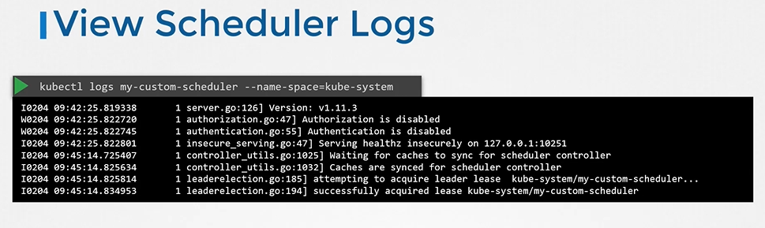
11.6 Modern Scheduler Configuration Profiles
In Kubernetes v1.22+, custom schedulers are configured using KubeSchedulerConfiguration profiles:
apiVersion: kubescheduler.config.k8s.io/v1
kind: KubeSchedulerConfiguration
profiles:
- schedulerName: my-scheduler
leaderElection:
leaderElect: false
Required RBAC bindings typically include:
- ServiceAccount: my-scheduler in kube-system
- ClusterRoleBinding: my-scheduler-as-kube-scheduler
- ClusterRoleBinding: my-scheduler-as-volume-scheduler
12. Topology Spread Constraints
12.1 Failure Domains & Even Distribution
Topology Spread Constraints control how Pods are distributed across failure domains (regions, zones, racks, or nodes) to ensure high availability and prevent single-point failures.
12.2 Core Parameters
maxSkew: Maximum permissible difference in the number of matching Pods between any two topology domains. Must be $> 0$.topologyKey: Node label key representing the topology domain (e.g.,topology.kubernetes.io/zone,kubernetes.io/hostname).whenUnsatisfiable:DoNotSchedule(Hard): Prevents scheduling if the skew constraint cannot be satisfied.ScheduleAnyway(Soft): Schedules the Pod while prioritizing nodes that minimize skew.labelSelector: Identifies which Pods count toward the domain calculation.matchLabelKeys(Kubernetes 1.27+): Dynamic Pod label keys used during rolling upgrades to calculate skew across revisions.
12.3 Manifest Example
apiVersion: apps/v1
kind: Deployment
metadata:
name: web-app
labels:
app: web
spec:
replicas: 6
selector:
matchLabels:
app: web
template:
metadata:
labels:
app: web
spec:
topologySpreadConstraints:
- maxSkew: 1
topologyKey: topology.kubernetes.io/zone
whenUnsatisfiable: DoNotSchedule
labelSelector:
matchLabels:
app: web
containers:
- name: nginx
image: nginx:alpine
resources:
requests:
cpu: 100m
memory: 128Mi
13. PriorityClass & Pod Preemption
13.1 Preemption Mechanism
When cluster compute resources are exhausted, high-priority Pods can preempt (evict) lower-priority Pods to claim required scheduling capacity.
13.2 Defining a PriorityClass
apiVersion: scheduling.k8s.io/v1
kind: PriorityClass
metadata:
name: high-priority
value: 1000000
globalDefault: false
description: "Mission-critical tier service priority class"
preemptionPolicy: PreemptLowerPriority # Or 'Never' for non-preempting queue jumping
13.3 Assigning PriorityClass to Pods
apiVersion: v1
kind: Pod
metadata:
name: critical-api-pod
spec:
priorityClassName: high-priority
containers:
- name: api
image: nginx:alpine
13.4 Non-Preempting Priorities & System Classes
preemptionPolicy: Never: Pod advances to the head of the scheduling queue without evicting running lower-priority Pods.- Built-in System Priorities:
system-node-critical(value: 2000001000): Used for node-essential daemons (kube-proxy).system-cluster-critical(value: 2000000000): Used for cluster control plane addons (CoreDNS).
14. Pod Disruption Budgets (PDB)
14.1 Voluntary vs. Involuntary Disruptions
- Involuntary Disruptions: Hardware faults, kernel panics, power failures. (Cannot be prevented by PDB).
- Voluntary Disruptions: Actions initiated by cluster admins or automated tooling (
kubectl drain, node scale-down via Cluster Autoscaler, software upgrades).
A PodDisruptionBudget (PDB) ensures a minimum quorum of healthy replicas remain operational during voluntary disruptions.
14.2 PDB Manifest Specifications
Define either minAvailable or maxUnavailable (as an absolute integer or a percentage):
Using minAvailable
apiVersion: policy/v1
kind: PodDisruptionBudget
metadata:
name: web-pdb
namespace: default
spec:
minAvailable: 2
selector:
matchLabels:
app: web
Using maxUnavailable
apiVersion: policy/v1
kind: PodDisruptionBudget
metadata:
name: payments-pdb
namespace: default
spec:
maxUnavailable: "25%"
selector:
matchLabels:
app: payments
14.3 Inspection and Diagnostic Commands
# List all active Pod Disruption Budgets
kubectl get pdb -A
# Inspect disruption budget status
kubectl describe pdb web-pdb
15. LimitRange (Namespace Constraints)
15.1 Namespace-Level Resource Governance
While ResourceQuota limits the aggregate consumption of an entire namespace, a LimitRange enforces constraints on individual Pods, containers, and PVCs within the namespace:
1. Default Requests & Limits: Injected automatically into containers that omit resource declarations.
2. Min & Max Bounds: Sets lower and upper compute limits per container or pod.
3. Max Limit-to-Request Ratio: Prevents extreme overcommit ratios.
15.2 Comprehensive LimitRange Manifest
apiVersion: v1
kind: LimitRange
metadata:
name: mem-limit-range
namespace: default
spec:
limits:
- type: Container
default:
cpu: 500m
memory: 512Mi
defaultRequest:
cpu: 100m
memory: 128Mi
max:
cpu: "2"
memory: 1Gi
min:
cpu: 50m
memory: 64Mi
maxLimitRequestRatio:
cpu: 4
memory: 4
15.3 LimitRange vs. ResourceQuota
| Feature | LimitRange |
ResourceQuota |
|---|---|---|
| Enforcement Scope | Per Container / Per Pod / Per PVC | Entire Namespace (Aggregated) |
| Default Injection | Yes (injects default requests/limits) | No |
| Primary Goal | Prevent individual runaway pods & set floors | Cap aggregate compute & storage spend |
| Admission Controller | LimitRanger |
ResourceQuota |